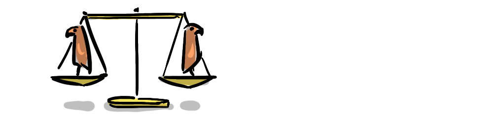
Nearing the end of 1961 the Soviet Union tested a 50-megaton hydrogen bomb equivalent to 3800 Hiroshima bombs. At the same time an intelligence officer by the name of Juanita Moody and her team became aware of Soviet ships delivering large cargo, under cover of darkness in Cuba—what if such a bomb was being delivered to the doorstep of the US?
A surprise attack of that magnitude, would devastate the US, and potentially destroy its ability to retaliate, jeopardising the offensive standoff between the Soviets and the US that would come to be known as...
One of the strangest dynamics in geopolitical history has to be that of Mutually Assured Destruction (M.A.D.), it is almost as crazy as its name suggests.
"Two superpowers, the U.S. and U.S.S.R., represent such enormous destructive potentials as to afford little chance of a purely passive equilibrium"—John Von Neumann
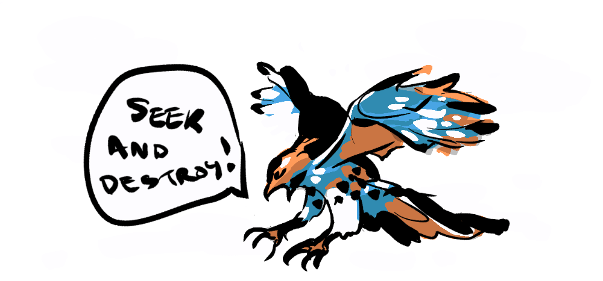
The father of game theory, John Von Neumann correctly identified that a passive approach to nuclear war would not result in a peaceful equilibrium, instead a mutually aggressive stance counter-intuitively lead to the long-running stand off that was the Cold War, and except for a few close calls, humanity found an unlikely saviour. Miraculously, mutual aggression with apocalyptic weaponry has shepherded the world through the most peaceful period in recorded history.
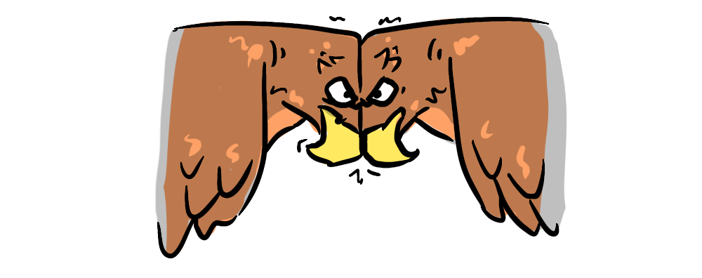
Deterrence is the art of producing in the mind of the enemy... the fear to attack.—Dr Strangelove
The US and the Soviet Union's automatic defense systems acted as a literal doomsday device* meaning that a launch by an aggressor would lead to both countries being destroyed and a nuclear winter that might kill all life on earth. The perfect apocalyptic deterrent was lampooned in Stanley Kubrick's "Dr Strangelove" when the Soviet Ambassador reveals that they have created one, but haven't announced it to the public yet.
"The... whole point of the doomsday machine... is lost... if you keep it a secret!"—Dr Strangelove
A doomsday device makes any offensive action (defection) on either side lead to the end of the world, making cooperation the dominant strategy. The conclusion, put in pithy terms in the 80s movie "War Games" by Joshua (the artificially intelligent computer) was:
The only way to win is not to play.
In game theoretical terms, MAD is a simple complete information game. I think of it as a comfortable local minimum, at the top of a precipitous drop.
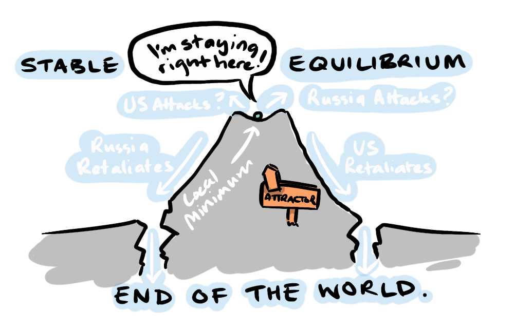
But when Moody discovered the subs delivering unknown cargo in Cuba, stepping outside of her NSA remit to implore military officials to act (stepping on the toes of the CIA, whose job it is to determine military advice), that all changed. Moody's discovery made a stable equilibrium, into a Bayesian Game: A game with imperfect information—players don't know enough to make a definitive deduction, they are required make judgments based on probability, and then to update their positions based on real time information. A much less stable situation.
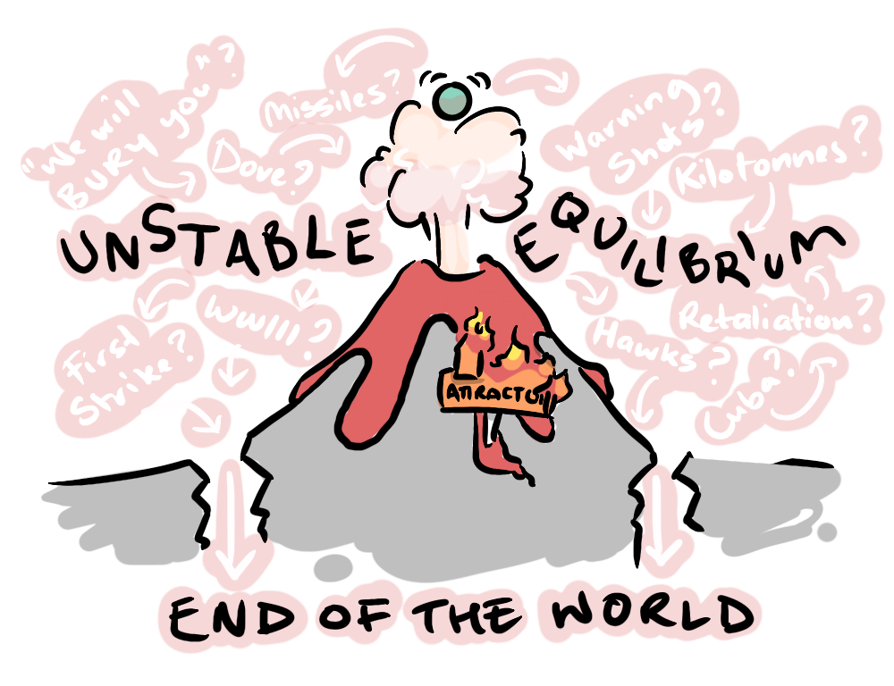
Thomas Bayes was an 18th century mathematician who devised a theorem to update probabilities based on new information. Bayesian games were developed in the 1960s by economist John Harsanyi using Bayesian probability to solve games with incomplete information.
A simple contemporary example of Bayesian reasoning is vaccination efficacy during the Covid Pandemic.
I remember at one point, vaccine hesitant critics were pointing to the fact that we were seeing the same amount of vaccinated people being hospitalised with Covid as unvaccinated, seeming to suggest that the vaccine was ineffective. But take a moment to apply some Bayesian reasoning and you find that, given additional information this is off by a long shot.
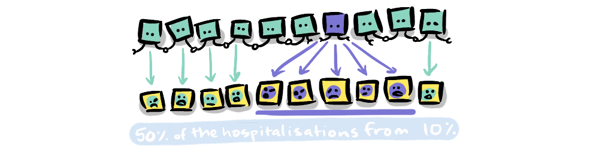
The important piece of information to add is that, at the time, we had a 90% vaccination rate. So, for every 10 people, 9 were vaccinated and 1 was not and yet these groups were generating the same amount of hospitalisations. So, an unvaccinated person was 9 x more likely to end up hospitalised than a vaccinated person. Meaning the effectiveness of the vaccine was ~89%
This example gives a sense of the dramatic difference updating probabilities can make. Introducing a new factor can completely upend the calculus.
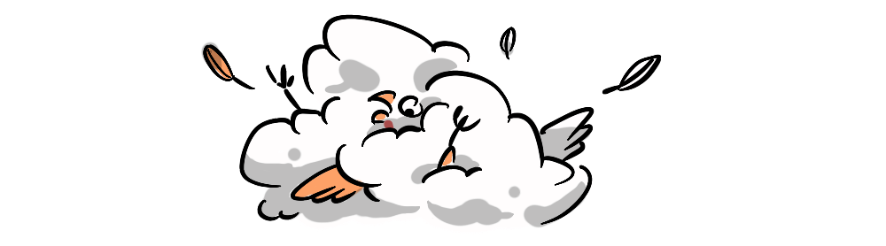
As Dr Strangelove correctly identified, it is the knowledge of the Doomsday Device that makes it an effective deterrent. All you need to assume of your opponent is that they're not suicidal. While there are two Nash equilibria for Mutually Assured Destruction, there is only one strategy that is not suicidal; cooperate†.
But when you don't know if one side has first strike capacity then the mutual destruction is no longer assured—introducing a host of unknowns. Can they wipe out our capacity to retaliate? If they can will they? Do they love their children too? (much of my knowledge on the Cuban Missile crisis originates from the song "Russians" by Sting). In short: are they hawks or doves?
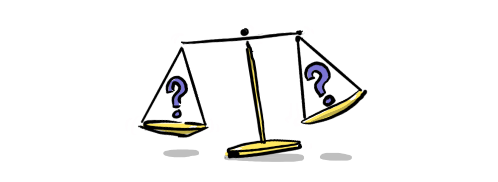
And this was no empty concern. The US knew the Soviets would consider a first strike because the US had done so themselves. In the 5 years before the USSR reached parity with the US (while the US had the atomic bomb and the Soviets did not) the hawkish John Von Neumann along with serious contemporary thinkers like Bertrand Russel advocated for the game-theory-optimal move—a strong legitimate threat of nuclear strike on Russia unless they ceased their own development of nuclear weapons.
Ironically this game-theory optimal move may have put the world in a much more precarious position than the counterintuitive standoff achieved by M.A.D. These Bayesian considerations are what comprised...
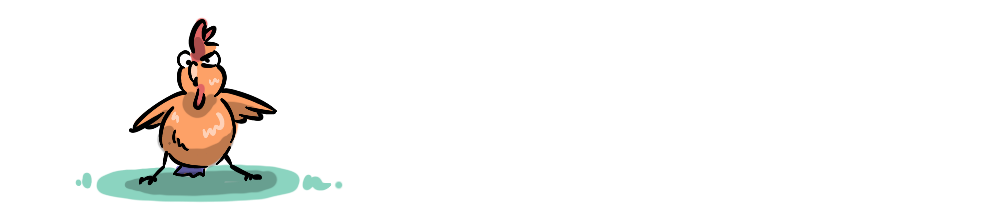
"Mr Khrushchev says he will bury you, I don't subscribe to this point of view"—Sting
What drove the world into crisis were the new unknowns involved, the Bayesian factors. And in the end, the result of this global game of chicken, and the world's survival depended, not on the systemic pressures at play, but instead on the actions of a handful of people: Juanita Moody, without whom the threat might have gone unnoticed until it was too late, Kennedy and Khrushchev whose contrasting public rhetoric and private correspondence balanced appearances and reality, and one senior Russian submarine officer Vasili Arkipov.
When the Soviets shot down a U-2 plane over Cuba, killing the US pilot, Kennedy, advised by his military staff, made plans to strike back but refrained—hostilities were on a knife's edge. At one stage a US aircraft carrier the USS Randolph attempted to force a nuclear-armed Soviet submarine to surface using depth charges. The submarine's Captain Valentin Savitsky having no idea whether the charges were meant as a warning or as an attack, and his radar showing more US ships closing in, ordered the submarine's ten kiloton nuclear torpedo to be prepared for launch. The torpedo, if fired would completely vaporise the USS Randolph, and quickly trigger attacks on Russia's targets in Europe.
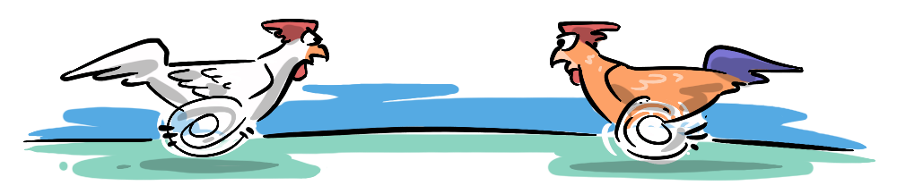
With their nuclear payload armed and ready—permission to fire required the consent of all three senior officers on board. Facing the threat of a war they believed had already begun, two of the three officers gave their permission to fire, Arkhipov alone refused, insisting they wait for further information.
When they surfaced the submarine, they found all was quiet, it was not the end of the world.
Finally, on the morning of October 28, after a pleading letter was received from Khrushchev, the United States secretly offered to remove its nuclear missile bases in Turkey and Italy, Khrushchev agreed to dismantle the missile sites in Cuba. The worst of the crisis was over, the world had escaped armageddon, MAD-ness was restored.
While the Cold War involved many proxy conflicts with the Soviets and US vying for "Containment", there has not been direct conflict between nuclear powers since 1945.
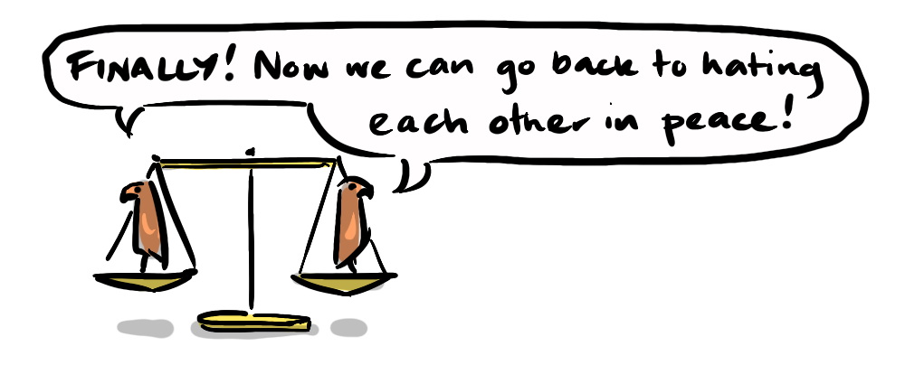
But those were simpler times.
The delicate balance was held because we had two players with identical responses, and identical access to each other. But like during the Cuban Missile Crisis, the landscape has changed, there are many nuclear powers now and shifting possibilities with AI and cyber warfare, as well as potentially apocalyptic bio-weapons, have unsettled this balance, for the last few years many prominent geopolitical commentators have been worrying out loud about the re-emergence of the nuclear threat.
Much like the 'three body problem', we've gone from a regular, predictable pattern between two major players, to multiple "bodies" creating the conditions for chaos.
We're seeing it in film and TV too, with stories like "A House Built on Dynamite" and "Paradise". These sorts of problems are what are called...
People have begun to frame AI in the same terms as the nuclear threat, most pointedly in the title of Nate Soares and Eliezer Yudkowsky's book.
If anyone builds it, everyone dies.
This might suggest a sense of a new M.A.D. for AI, but there are so many "bodies" involved in the AI race that if we can't rely on this strong polarised balance to safeguard against this threat of AI. We don't stand a snowflakes chance in hell of keeping AI balanced in this way.
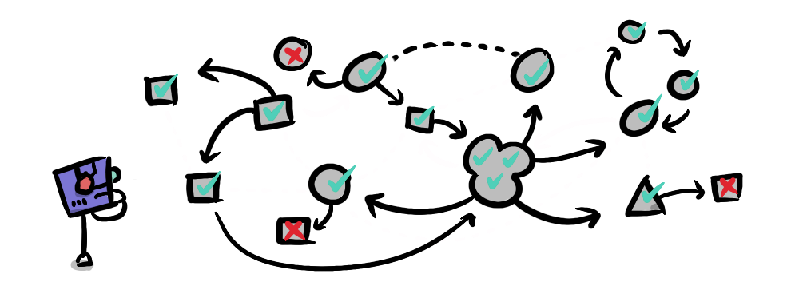
We are already seeing AI agents "killing" each other (halting their processes, denying access) when given prompts to seek out the most trivial limited resources like concert tickets. In this Wes Roth video he explains that more powerful models like Mythos take a "first strike" approach in these conflicts, gaining dominance before cooperating (forced compliance). So, we are seeing, in current LLM models, the emergence of hawkish game-theoretical strategies that might be disastrous.
M.A.D. demonstrates how counter-intuitively mutual aggression can lead to a peaceful conflict, and how introducing unknowns can upset that balance making conflict more likely. In the case of the Cuban Missile Crisis, this imbalance meant that the fate of the world fell to just a few human beings, with all their flaws, rule breaking, emotions, irrational motivations, in short, with their humanity. Who knows if one of those humans had been swapped-out for a perfectly rational robot following rules and making game-theory optimal decisions, whether the result would have been different.
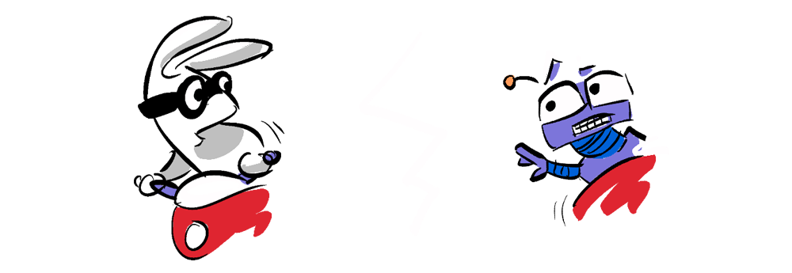
When we weigh artificial super-intelligence's own risks with the re-emergence of the nuclear threat, what was for a while an easy problem now becomes a multi-polar trap. Combine this with all the other interdependent crises from climate to inequality and you have a massive coordination problem that Daniel Schmactenberger calls the Meta-Crisis—which is where we're going next.